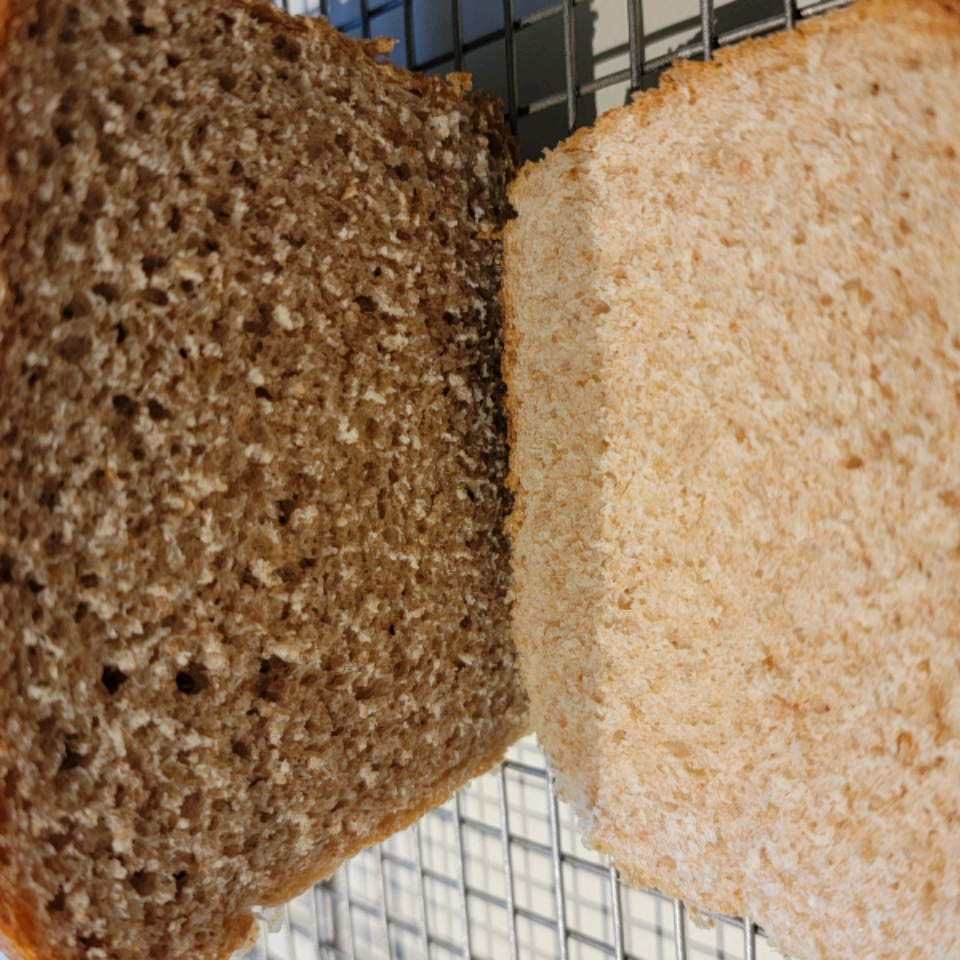

Honey Wheat Bread

And finally, what you have here is a recipe to make a delicious, filling and sweet loaf of bread. Everything you need for a full honey breakfast.
This recipe takes 2 hours and 30 minutes (25 mins preparation, 35 mins cook time and 1h 30 mins additional time), and lasts for 24 servings. Let's see what we'll need.
Ingredients
- 1 (.25 ounce) package rapid rise yeast
- 1 teaspoon white sugar
- ½ cup warm water (110 degrees F/45 degrees C)
- 1 (12 fluid ounce) can evaporated milk
- ¼ cup water
- ¼ cup melted shortening
- ¼ cup honey
- 2 teaspoons salt
- 2 cups whole wheat flour
- 3 cups bread flour
- 2 tablespoons butter
Steps
- Dissolve yeast and sugar in 1/2 cup warm water.
- Combine milk, 1/4 cup water, shortening, honey, salt and wheat flour in food processor or bowl. Mix in yeast mixture, and let rest 15 minutes. Add bread flour, and process until dough forms a ball. Knead dough by processing an additional 80 seconds in food processor, or mix and knead by hand 10 minutes. Place the dough in a buttered bowl, and turn to coat. Cover the bowl with plastic wrap. Let dough rise for 45 minutes, or until almost doubled.
- Punch down, and divide dough in half. Roll out each half, and pound out the bubbles. Form into loaves, and place in buttered 9x5 inch bread pans. Butter the tops of the dough, and cover loosely with plastic wrap. Let rise in a warm area until doubled; second rise should take about 30 minutes.
- Place a small pan of water on the bottom shelf of the oven. Preheat oven to 375 degrees F (190 degrees C).
- Bake for 25 to 35 minutes, or until tops are dark golden brown. Butter crusts while warm. Slice when cool.
Go back